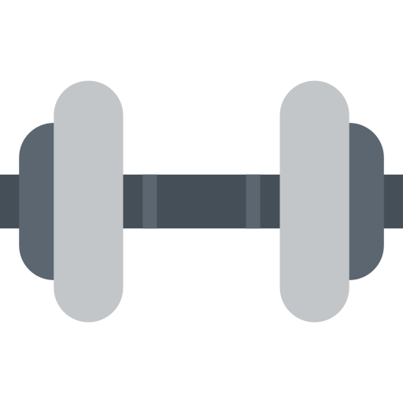
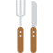

<!DOCTYPE html>
<html ng-app="myApp">
  <head>
    <meta charset="utf-8">
    <meta name="viewport" content="initial-scale=1, maximum-scale=1, user-scalable=no, width=device-width">
    <title>FitJournal</title>
  
    <link href="lib/ionic/css/ionic.css" rel="stylesheet">
    <!--link href="css/animate.css" rel="stylesheet"-->
    <link href="css/color-theme.css" rel="stylesheet">
    <link href="css/style.css" rel="stylesheet">

    <!-- IF using Sass (run gulp sass first), then uncomment below and remove the CSS includes above
    <link href="css/ionic.app.css" rel="stylesheet">
    -->

    <!-- ionic/angularjs js -->
    <script src="lib/ionic/js/ionic.bundle.js"></script>
    <script type="text/javascript" src="//ajax.googleapis.com/ajax/libs/jquery/2.0.3/jquery.min.js"></script> 
    <script src="lib/ionic-datepicker/dist/ionic-datepicker.bundle.min.js"></script>
    <!-- cordova script (this will be a 404 during development) -->
    <script src="lib/ngCordova/dist/ng-cordova.js"></script>
    <script src="cordova.js"></script>

    <!-- your app's js -->
    <script src="js/routine-list/controller.js"></script>
    <script src="js/routine-list/factory.js"></script>

    <script src="js/routine-details/controller.js"></script>
    <script src="js/routine-details/factory.js"></script>
    <script src="js/profile-details/controller.js"></script>
    <script src="js/profile-details/factory.js"></script>
    <script src="js/meal-planner/controller.js"></script>
    <script src="js/meal-planner/factory.js"></script>
    <script src="js/app.js"></script>
    <script type="text/javascript" src="js/javaScripts.js"></script>
  </head>

  <body ng-controller="MainCtrl">
      <ion-nav-bar class="bar-stable">
      </ion-nav-bar>
      <ion-nav-view ui-view="main"></ion-nav-view>

    <script id="main-page.html" type="text/ng-template">
      <ion-view>
        <ion-header-bar>
          <h1 class="title">FitJournal</h1>
          <div class="buttons button-right">
           <button class="button button-icon ion-android-add" ng-click="toggleFooter(); bottomNav()"></button>
           <button class="button button-icon ion-android-more-vertical" ng-click="openPopover($event)" ng-controller="SideMenuCtrl"></button>
         </div>
        </ion-header-bar>
        <ion-content class="main-content">
          <h3>main page</h3>
        </ion-content>
        <ion-footer-bar ng-if="showFooter">
         <ion-nav-view ui-view="bottom-nav"></ion-nav-view>
       </ion-footer-bar>
      </ion-view>
    </script>

    <script id="side-menu.html" type="text/ng-template">
      <ion-popover-view>
        <ion-content>
          <div class="list">
              <a class="item item-icon-left side-menu" href="#/profile" ng-click="closePopover()"><i class="icon ion-person"></i>Profile details</a>
              <a class="item item-icon-left side-menu" ui-sref="routinesList" ng-click="closePopover()"><i class="icon ion-clipboard"></i>Fitness routine</a>
              <a class="item item-icon-left side-menu"><i class="icon ion-calendar"></i>Meal planner</a>
              <a class="item item-icon-left side-menu"><i class="icon ion-stats-bars"></i>Progress chart</a>
              <a class="item item-icon-left side-menu"><i class="icon ion-gear-b"></i>Settings</a>
          </div>
        </ion-content>
      </ion-popover-view>
    </script>

    <script type="text/ng-template" id="bottom-nav.html">
      <ion-view class="bottom-nav-color">
        <ion-slide-box on-slide-changed="slideChange(index)">
          <ion-slide>

                <a class="button button-clear widget-button" ng-click=""></img>Weight</a>
                <a class="button button-clear widget-button" ng-click=""></img>Measurements</a>
                <a class="button button-clear widget-button" ng-click=""></img>Exercise Log</a>
                <a class="button button-clear widget-button" ng-click=""></img>Food Intake</a>
            
          </ion-slide>
          <ion-slide>
            <a class="button button-clear widget-button" ng-click=""></img>Images</a>
            <a class="button button-clear widget-button" ng-click=""></img>Calories Counter</a>
          </ion-slide>
        </ion-slide-box>
      </ion-view>
    </script>
  </body>
</html>
